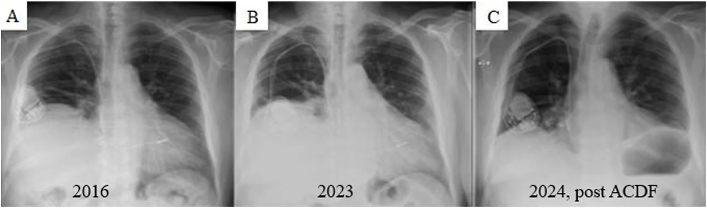
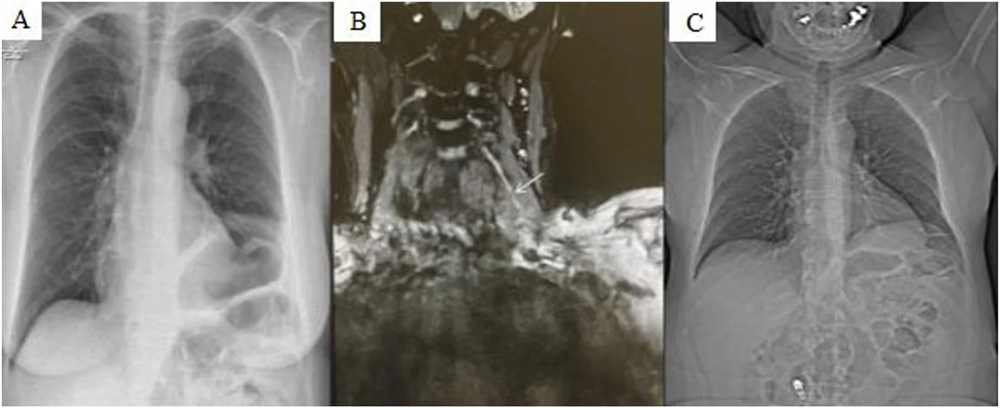
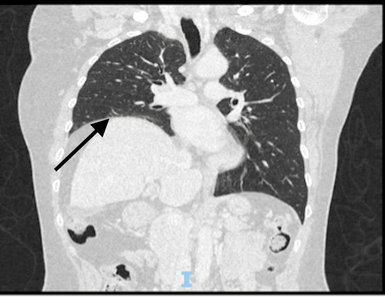
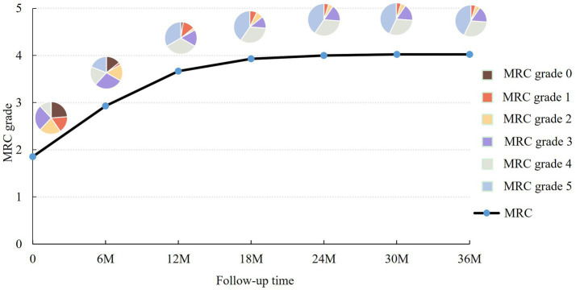

1889 — Hội chứng Parsonage–Turner có tổn thương thần kinh hoành / Parsonage–Turner syndrome with phrenic nerve involvement
Tags: pattern:nang-cao-nua-hoanh pattern:van-dong-nghich-thuong pattern:teo-co pattern:day-thoi-gian vung:than-kinh-ngoai-bien vung:co-hoanh vung:phoi protocol:MRN protocol:EMG-than-kinh-hoanh protocol:SA-co-hoanh protocol:sniff-test
Mức chắc chắn (certainty): tổng hợp y văn (literature synthesis) — số liệu từ loạt 8 ca liệt thần kinh hoành có đối chiếu y văn (PMC13677414), đoàn hệ 248 ca PTS dẫn qua bài đó, đoàn hệ bảo hiểm ~26 triệu người (PMC12690013), loạt 42 ca theo dõi 55 tháng (PMC13095506), tổng quan 2026 (PMC12982878) và các ca lâm sàng có ảnh (PMC13354110, PMC13571711). Phần thời điểm mổ là suy luận thực hành — không có thử nghiệm ngẫu nhiên.
Câu chốt: Parsonage–Turner (neuralgic amyotrophy, PTS) là bệnh tự miễn–viêm của dây thần kinh ngoại biên, không phải bệnh đám rối đơn thuần: 7,6% bệnh nhân PTS có tổn thương thần kinh hoành (248 ca), nhưng chẩn đoán muộn trung vị 20 tuần vì không ai nghĩ tới. Trên phim, nó chỉ là một nửa hoành cao — giống hệt liệt sau mổ tim, tràn dịch dưới đáy phổi, Chilaiditi. Khác biệt nằm ở tiền sử: đau vai dữ dội vài ngày rồi yếu, thường sau nhiễm virus. Đa số hồi phục trong 6 tháng–3 năm nhưng 20% còn di chứng, nên câu hỏi lâm sàng là "có bằng chứng tổn thương dây thần kinh và có hồi phục không", không phải "có mổ cổ hay không".
1. Tổng quan bệnh học – cơ chế hình ảnh
1.1 Vì sao một bệnh "vai" lại gây khó thở
- Cơ chế hiện hành: khuynh hướng di truyền + yếu tố khởi phát miễn dịch + vi chấn thương cơ học → tăng tính thấm hàng rào máu–thần kinh, tế bào/dịch miễn dịch vào nội mô dây thần kinh (endoneurium) → viêm tự miễn, phù nội dây, dây cứng lại và gập/kinking khi khớp bên cạnh vận động → sau nhiều lần gập, các bó sợi (fascicle) xoay và thắt lại thành "eo đồng hồ cát" (hourglass constriction) (PMC13677414).
- Thần kinh hoành đi từ C3–C5 xuống cơ bậc thang trước, vào ngực trước rốn phổi, ôm màng tim tới cơ hoành. Vì là dây dài, ít nhánh, nằm sát khớp/động mạch nên dễ bị kéo–gập; tổn thương một bên là điển hình, hai bên gây khó thở khi nằm ngửa (orthopnea) và suy hô hấp — kiểu bệnh cảnh rất dễ bị gán cho tim/phổi.
- Vì sao biểu hiện muộn: đau vai xuất hiện trước liệt hoành vài ngày–vài tuần, rồi tự giảm; khi bệnh nhân đến vì khó thở thì không còn đau → mất dấu hiệu chỉ điểm. Trong loạt 8 ca, 6/8 chỉ được nhận ra PTS khi hỏi lại tiền sử (PMC13677414).
1.2 Cơ chế hình ảnh: tại sao MRN sáng, tại sao siêu âm thấy nghịch thường
- MR neurography (MRN) T2/STIR tăng tín hiệu: phù nội dây làm tăng nước tự do → T2 dài; hình ảnh là đoạn dây dày, sáng, có chỗ thắt — không phải khối u. Đây là dấu hiệu viêm hoạt tính, xuất hiện trong vòng 1 tháng ở 90% bệnh nhân, eo đồng hồ cát ở 74% (Ripellino 2022, dẫn qua PMC13677414); loạt 117 ca khác: dày/giảm âm 24%, thắt/xoắn 66%.
- TẠI SAO siêu âm cơ hoành là chốt chức năng: M-mode ghi vị trí vòm hoành theo thời gian. Liệt → khi hít vào, áp lực âm lồng ngực hút tạng bụng lên, nửa hoành đi lên (nghịch thường) thay vì đi xuống. Hướng đi là dấu chốt; độ dày Tdi có thể bình thường vì cơ chưa teo (bài 1849).
- TẠI SAO EMG giúp phân biệt tổn thương trục vs myelin: mất sợi trục → biên độ CMAP giảm; tổn thương myelin/block dẫn truyền → thời tiềm kéo dài với biên độ còn. PTS gây tổn thương sợi trục nên CMAP hoành giảm — đúng như loạt ca (PMC13677414).
1.3 Số liệu nền (bắt buộc thuộc)
| Chỉ số | Số | Nguồn |
|---|---|---|
| Tần suất PTS ở chăm sóc ban đầu | 1/1.000/năm | van Alfen 2006, dẫn qua PMC13677414 |
| Tần suất theo dữ liệu bảo hiểm (~26 triệu người) | 7,7–12,8/100.000 (lưu ý: thấp hơn ~90% so với đoàn hệ tiền cứu) | PMC12690013 |
| Tần suất ước tính tiền cứu | ~100/100.000 | PMC12690013 |
| Tần suất tại một trung tâm phẫu thuật bàn tay | 47/100.000/năm | PMC13095506 |
| Tổn thương thần kinh hoành trong PTS | 7,6% (248 ca), chẩn đoán muộn trung vị 20 tuần | van Alfen 2015, dẫn qua PMC13677414 |
| Liệt hoành được mã hóa cùng PTS (dữ liệu thanh toán) | 0,45% — tức phần lớn bị bỏ sót | PMC12690013 |
| Liệt nửa hoành trong 99 ca PTS kinh điển | 6 ca + 1 ca hai bên | Tsairis 1972, dẫn qua PMC13677414 |
| "Liệt hoành vô căn" hóa ra có đặc điểm PTS | 17/33 | Tsao 2006, dẫn qua PMC13677414 |
| Hồi phục | 65% ở 10 tháng; đa số trong 6 tháng–3 năm, 20% còn di chứng | PMC12982878 · PMC13677414 |
| Tái phát | 26% thể thường, 75% thể gia đình | PMC12982878 |
2. Mẫu hình + chẩn đoán phân biệt theo cơ chế (gamut)
- Mẫu hình kinh điển: đau vai/cổ dữ dội một bên (vài giờ–vài ngày) → yếu cơ vai/cánh tay, cùng bên với nửa hoành cao; thường sau nhiễm virus (HEV, EBV, CMV, HBV, HIV, parvovirus B19, SARS-CoV-2), tiêm vaccine, phẫu thuật, gắng sức vai.
- Thể "hoành đơn độc" (phrenic-predominant): chỉ khó thở/orthopnea, không yếu tay — đây là thể dễ bỏ sót nhất và xuất hiện ở nhiều ca trong loạt 8 ca (6/8 được chẩn đoán PTS, PMC13677414).
- Gamut theo cơ chế (5 nhóm):
- Thần kinh tự phát/viêm: PTS (phổ biến nhất trong loạt), bệnh thần kinh do nhiễm (HEV), hội chứng Guillain–Barré, bệnh thần kinh đái tháo đường, di truyền (SEPTIN9).
- Chèn ép cơ học: hẹp lỗ ghép C3–C5 do thoái hóa cột sống cổ (đối thủ chính của PTS), u đỉnh phổi (Pancoast), hạch trung thất, bướu giáp lớn.
- Sau can thiệp: mổ tim/ngực (bài 1849), mổ cổ/đám rối, đặt catheter tĩnh mạch cảnh, xạ trị.
- Chấn thương: kéo giãn vai/cổ, chấn thương ngực, nắn chỉnh cổ.
- Cơ/tạng dưới hoành: giãn cơ hoành (eventration), tràn dịch dưới đáy phổi (bài 1888), xẹp đáy phổi, áp-xe dưới hoành, gan/lách to, Chilaiditi.
- Gợi nhớ "PHRENIC": PTS/viêm · Hệ cột sống cổ (C3–C5) · Rổ/u đỉnh phổi · Eventration · Nhiễm (HEV/EBV) · Iatrogenic (mổ) · Chấn thương.
3. Bảng so sánh phân biệt (ma trận đối chiếu)
| Thực thể (entity) | Hình ảnh điển hình (X-quang/SA/MRN) | Chốt vào (rule-in) | Chốt loại (rule-out) | Gợi ý xác nhận |
|---|---|---|---|---|
| PTS có tổn thương hoành | Nửa hoành cao một bên ± xẹp đáy; M-mode nghịch thường; MRN dây sáng, eo đồng hồ cát | Đau vai dữ dội trước đó rồi yếu tay cùng bên + nghịch thường | Đau–yếu xuất hiện cùng lúc, tăng khi xoay cổ, Spurling (+) → nghĩ chèn ép rễ | MRN thần kinh hoành/đám rối; EMG; siêu âm + sniff |
| Hẹp lỗ ghép C3–C5 | Thoái hóa/gai xương chèn lỗ ghép cùng bên; hoành cao từ từ, không đau vai kiểu PTS | Hình ảnh chèn ép rõ C3–C5 khớp lâm sàng + không có giai đoạn đau–yếu tách rời | Thoái hóa nhẹ không chèn ép + khởi phát cấp sau nhiễm → PTS | MRI cột sống cổ; EMG; hội chẩn đa chuyên khoa |
| Liệt hoành sau mổ tim/ngực | Hoành cao trái thường gặp, dây thép xương ức, đáy phổi xẹp | Mổ tim/ngực trong vài tuần + nghịch thường | Không có mốc mổ, khởi phát sau đau vai → PTS | Siêu âm (bài 1849) |
| Tràn dịch dưới đáy phổi | Đỉnh hoành lệch ra ngoài, khoảng cách hoành–bóng vị > 1 cm, không nghịch thường; đổi theo tư thế | Đỉnh lệch bên + thay đổi khi nằm/đứng + siêu âm thấy dịch | Nghịch thường thật + hoành cao đều → liệt | Siêu âm màng phổi, CT, chọc dịch (bài 1888) |
| Giãn cơ hoành (eventration) | Hoành cao nhẵn, liên tục, không xẹp đáy, không mốc mổ; thường không nghịch thường rõ | Bẩm sinh, phát hiện tình cờ, không tiến triển | Khởi phát cấp + nghịch thường + đau vai → PTS | So phim cũ; CT; siêu âm |
| U đỉnh phổi/hạch trung thất | Khối đỉnh phổi hoặc trung thất cùng bên; có thể hội chứng Pancoast | Khối thấy được trên CT + hoành cao cùng bên | CT ngực sạch + MRN có eo thắt → PTS | CT ngực có cản quang, PET nếu nghi |
| Bệnh thần kinh–cơ hệ thống | Hoành cao hai bên, yếu cơ gốc chi, không đau kiểu PTS | Yếu đối xứng + phản xạ giảm + tổn thương nhiều dây | Một bên, đau khu trú → PTS | EMG toàn thân, xét nghiệm tự miễn |

X-quang ngực thẳng của cùng một bệnh nhân: (A) 2016 — nửa hoành phải nâng cao nặng; (B) 2023 — không thay đổi đáng kể; (C) 2024 sau mổ giải ép C3–C4/C4–C5 — hoành hạ xuống. Bài học: hoành cao mạn tính có thể do nguyên nhân chèn ép hoặc PTS đã hồi phục chậm; hình ảnh một thời điểm không phân biệt được — phải có diễn tiến. Nguồn: Brain & Spine 2026, PMC13677414, CC BY-NC-ND 4.0 (nguyên bản, không cắt/ghép).
Cùng bệnh nhân thứ 3: (A) X-quang 2024 — nửa hoành trái nâng cao nặng; (B) MR neurography đường đi cổ của thần kinh hoành: nhiều đoạn tăng tín hiệu, không đều, thắt lại (mũi tên) — dấu hiệu của phù nội dây + xoắn bó sợi, không phải khối; (C) X-quang 2025 — hoành hạ xuống sau điều trị nội khoa. Đây là bằng chứng tổn thương thần kinh thực thể, giúp loại "hoành cao không rõ nguyên nhân". Nguồn: Brain & Spine 2026, PMC13677414, CC BY-NC-ND 4.0.4. Protocol chẩn đoán + ngưỡng + thuật toán
4.1 Trình tự (không nhảy cóc)
- X-quang ngực thẳng, phim hít vào: xác định bên nào cao, tìm xẹp đáy, loại trừ tràn dịch (bài 1888) và thoát vị.
- Siêu âm cơ hoành tại giường + sniff: đo DE hai bên, hướng vận động, TF; đây là bước chứng minh chức năng (ngưỡng ở mục 4.2).
- Hỏi lại tiền sử có cấu trúc — 3 câu quyết định: (a) có đau vai/cổ dữ dội trước đó không? (b) có yếu tay cùng bên không? (c) có nhiễm virus/sốt/tiêm vaccine trong 4 tuần trước không?
- Xét nghiệm trigger: HEV IgM/IgG, EBV, CMV, HBV, HIV, parvovirus B19, Borrelia, SARS-CoV-2 — tìm được trigger củng cố PTS, nhất là thể đa dây/một bên (PMC13677414).
- EMG/ENMG thần kinh hoành: biên độ CMAP giảm (mất sợi trục), thời tiềm; so hai bên và với cơ hoành.
- MRN thần kinh hoành/đám rối cánh tay khi nghi PTS hoặc cần phân biệt với chèn ép: tìm dày, tăng T2, eo đồng hồ cát.
- MRI/CT cột sống cổ khi: khởi phát từ từ, không có giai đoạn đau–yếu tách rời, Spurling (+), hoặc hình ảnh gai xương C3–C5 rõ — nhưng đừng suy diễn thoái hóa nhẹ thành nguyên nhân.
- CT ngực để loại u đỉnh phổi/hạch trung thất — đặc biệt khi hút thuốc, sụt cân, đau vai kiểu Pancoast.
4.2 Ngưỡng định lượng
| Chỉ số | Bình thường | Bất thường |
|---|---|---|
| DE thở yên lặng | 10–20 mm | < 10 mm (nam), < 9 mm (nữ) = rối loạn (bài 1849, PMC9747253) |
| DE khi sniff | > 18 mm (nam), > 16 mm (nữ) | < 18/16 mm = rối loạn |
| TF = (Tdi hít vào − Tdi thở ra)/Tdi thở ra | 20–40% | < 20% = paresis/paralysis |
| VC tư thế | giảm < 10% khi nằm ngửa | giảm ≥ 10–20% gợi ý liệt có ý nghĩa (bài 1849) |
| MRN dây thần kinh | tín hiệu đều, không thắt | tăng T2 + dày + eo đồng hồ cát = viêm/xoắn (PMC13677414) |
| Thời gian chờ trước khi xét mổ | — | ≥ 3 tháng điều trị nội khoa trước khi cân nhắc giải ép/giải phóng (PMC13677414) |
4.3 Thuật toán "hoành cao + đau vai"
flowchart TD
A[Hoành cao một bên + khó thở/orthopnea] --> B[Siêu âm M-mode + sniff]
B --> C{Hướng đi lên khi hít vào?}
C -->|Không| D[Không liệt: tràn dịch dưới đáy, xẹp, Chilaiditi, eventration]
C -->|Có| E{Đau vai dữ dội trước đó + yếu tay cùng bên?}
E -->|Có| F[Nghĩ PTS: xét nghiệm trigger + EMG + MRN]
E -->|Không| G{Thoái hóa C3-C5 chèn ép rõ?}
G -->|Có, khớp lâm sàng| H[MRI cổ + hội chẩn: cân nhắc giải ép]
G -->|Không rõ| F
F --> I[Điều trị nội khoa: giảm đau, corticoid sớm, phục hồi chức năng]
I --> J{Hai bên / khó thở nặng?}
J -->|Có| K[NIV + theo dõi sát]
J -->|Không| L[Đánh giá lại 3-6 tháng]
L --> M{Hồi phục?}
M -->|Có| N[Theo dõi tiếp tới 3 năm]
M -->|Không + MRN có eo thắt| O[Chuyển phẫu thuật thần kinh: giải phóng/xử lý bó sợi]
4.4 Điều trị — bằng chứng và giới hạn
- Giảm đau sớm là ưu tiên (đau thần kinh, thường dữ dội): gabapentinoid/opioid ngắn hạn theo cân nặng; corticoid uống sớm (< 4 tuần sau khởi phát) được khuyến cáo trong tổng quan, nhưng không có thử nghiệm ngẫu nhiên (PMC13677414).
- Phục hồi chức năng và tránh teo cơ; theo dõi sức cơ MRC theo thời gian. Loạt 42 ca: 18 hồi phục hoàn toàn + 13 hồi phục một phần (MRC 4) trong ~2 năm, nhưng 21 ca còn đau mạn và 7 ca phải mổ vì không hồi phục sau ≥ 3 tháng (PMC13095506).
- Hai bên/tổn thương nặng: NIV (đặc biệt khi orthopnea, giảm VC tư thế) — không chờ hồi phục tự nhiên (PMC13677414).
- Phẫu thuật thần kinh: chỉ khi không hồi phục sau ≥ 3 tháng và hình ảnh có eo thắt/xoắn; kỹ thuật là giải phóng nội bó (intrafascicular neurolysis) hoặc cắt–nối lại bó sợi; chưa có RCT, chọn lọc rất chặt (PMC13677414).
- Không mổ cổ chỉ vì "có gai xương": một ca trong loạt mổ C3–C4/C4–C5 nhưng không cải thiện, và hoành chỉ hồi phục sau 20 tháng — diễn tiến phù hợp PTS tự khỏi hơn là do mổ (PMC13677414). Đây là cạm bẫy can thiệp oan.
5. Biến thể bình thường và cạm bẫy
- Thoái hóa cột sống cổ là "bình thường theo tuổi": gai xương C5–C7 rất thường gặp; thấy gai xương không có nghĩa là nguyên nhân. Chỉ quy cho chèn ép khi hình ảnh chèn ép lỗ ghép rõ + lâm sàng khớp (mất lực theo rễ, Spurling) và không có giai đoạn đau–yếu tách rời.
- Đau–yếu tách rời là chìa khóa lâm sàng: PTS = đau trước, yếu sau, không phụ thuộc tư thế cổ; bệnh rễ = đau và yếu cùng lúc, tăng khi xoay/ngửa cổ (Spurling) (Silverman 2022, dẫn qua PMC13677414).
- "Liệt hoành vô căn" thường là PTS: 17/33 ca "vô căn" có đặc điểm PTS — đừng dừng ở nhãn "vô căn" khi chưa hỏi tiền sử và chưa làm MRN/EMG.
- Thể hoành đơn độc dễ bị gán cho COPD/tim: bệnh nhân orthopnea với siêu âm tim bình thường phải nghĩ tới liệt hoành; một ca bị điều trị "COPD nặng lên" nhiều tháng trước khi chụp lại phim (PMC13354110).
- Hai bên dễ bỏ sót: khó thở khi nằm ngửa + VC giảm khi nằm + không cai được máy → đo cả hai bên, đừng chỉ nhìn bên "cao".
- Siêu âm một lần không đủ: Tdi bình thường trong liệt một bên; phải đo hướng và sniff, và đo lại khi hết đau/guarding (bài 1849).
- Đừng nhầm MRN với khối u: tổn thương PTS là dây dày, dài, có eo, không phải nốt — sinh thiết mù rất nguy hiểm.

CT ngực coronal ở bệnh nhân 56 tuổi, COPD, khó thở khi nằm ngửa nhiều tháng: nửa hoành phải nâng cao (mũi tên), đáy phổi phải xẹp. CT chứng minh hình thái, không chứng minh liệt — nhưng khi đã loại u/chèn ép, bước tiếp theo là siêu âm động học. Nguồn: Cureus 2026, PMC13354110, CC BY 4.0.6. Tự lượng giá — Blind Quiz
Ca 1 — Nữ 56 tuổi, COPD, khó thở tăng dần + khó thở khi nằm ngửa nhiều tháng; siêu âm tim bình thường. Nhìn CT, mô tả trước.
- Hỏi: dấu hiệu chính? 3 chẩn đoán phân biệt? Bạn hỏi thêm một câu tiền sử nào có thể đổi chẩn đoán?
Bấm để hiện đáp án (findings + chẩn đoán)
- Findings: nửa hoành phải nâng cao rõ, đáy phổi phải xẹp; không thấy khối trung thất/đỉnh phổi trên CT.
- Phân biệt: liệt thần kinh hoành (PTS), giãn cơ hoành (eventration), tràn dịch dưới đáy phổi, xẹp phổi, chèn ép rễ C3–C5.
- Câu hỏi tiền sử quyết định: "Trước khi khó thở, bà có bị đau vai/tay dữ dội và yếu tay cùng bên không?" — ca thật trả lời có: đau tay phải + yếu ngón cái sau cúm, tức PTS thể hoành đơn độc; siêu âm cho liệt hoàn toàn hoành phải, và dung tích phổi giảm rõ khi nằm.
- Nguồn ảnh: Cureus 2026, PMC13354110, CC BY 4.0.
Ca 2 — Nữ 64 tuổi, đau vai rồi yếu tay, sau đó khó thở. Ảnh (A) là phim 2024; (B) là MRN; (C) là phim 2025.
- Hỏi: (A) mô tả gì? (B) mũi tên chỉ dấu hiệu gì và vì sao nó tăng tín hiệu? (C) nói lên điều gì về tiên lượng?
Bấm để hiện đáp án
- Findings: (A) nửa hoành trái nâng cao nặng; (B) thần kinh hoành đoạn cổ dày, tăng tín hiệu, không đều, có chỗ thắt — eo đồng hồ cát, do phù nội dây + xoắn bó sợi (tăng nước tự do → T2 sáng); (C) hoành hạ xuống sau điều trị nội khoa.
- Chẩn đoán: PTS có tổn thương thần kinh hoành, một bên; bằng chứng thực thể trên MRN, không cần sinh thiết.
- Tiên lượng: hồi phục được nhưng chậm (6 tháng–3 năm); 20% còn di chứng; không mổ khi chưa thử ≥ 3 tháng nội khoa.
- Nguồn ảnh: Brain & Spine 2026, PMC13677414, CC BY-NC-ND 4.0.
Ca 3 — Bệnh nhân PTS được theo dõi 36 tháng. Đồ thị dưới đây nói gì về quá trình hồi phục?

- Hỏi: trục tung là gì? Vì sao đường cong không đơn điệu? Điều này thay đổi cách bạn tư vấn bệnh nhân ra sao?
Bấm để hiện đáp án
- Findings: trục tung là sức cơ trung bình theo thang MRC (0–5) của 42 bệnh nhân PTS; đường cong dao động trong 36 tháng, tăng dần nhưng có đoạn chững/giảm.
- Ý nghĩa: hồi phục không tuyến tính; một lần đo yếu hơn không có nghĩa thất bại. Trong loạt: 18 hồi phục hoàn toàn, 13 hồi phục một phần sau ~2 năm, 21 còn đau mạn.
- Tư vấn: giải thích mốc 6 tháng–3 năm, đặt kỳ vọng thực tế, theo dõi chức năng chứ không chỉ một lần EMG; không vội mổ khi còn trong cửa sổ hồi phục.
- Nguồn ảnh: Front Neurol 2026, PMC13095506, CC BY 4.0.
Bài liên quan chéo
- 1849 – Liệt cơ hoành một bên sau mổ tim/ngực (cùng hình ảnh, khác cơ chế)
- 1888 – Tràn dịch dưới đáy phổi giả nâng cao cơ hoành (bắt chước hoành cao)
- 1776 – Bệnh cơ hoành do thở máy (VIDD)
- 045 – Thành ngực & hoành
- 1617 – Bệnh đám rối cánh tay do xạ
- 1850 – Siêu âm cơ hoành dự báo cai máy ở trẻ
Không dùng để chẩn đoán độc lập khi chưa có người hướng dẫn.